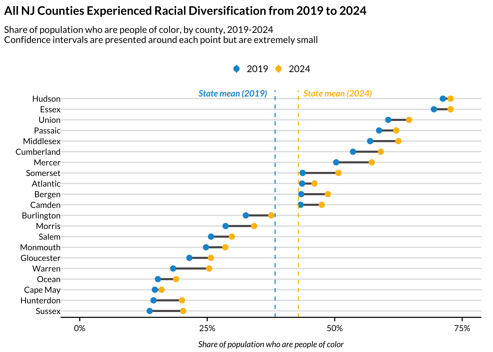

Overview
urbnindicators aims to provide users with analysis-ready data from the American Community Survey (ACS).
What you can access:
Hundreds of pre-computed variables, including percentages and the raw count variables used to produce them. Or flexibly query any table your heart desires.
Or flexibly specify your own derived variables with a series of helper functions.
Margins of error for all variables–those direct from the API as well as derived variables–with correctly calculated pooled margins of error, per Census Bureau guidance.
Meaningful, consistent variable names–no more “B01003_001”; try “total_population_universe” instead. (But if you’re fond of the API’s variable names, those are stored in the codebook as well for cross-referencing.)
A codebook that describes how each variable is calculated.
Data for multiple years and multiple states out of the box.
Supplemental measures, such as population density, that aren’t available from the ACS.
Tools to aggregate or interpolate your data to different geographies–along with correctly adjusted margins of error.
Installation
Install the development version of urbnindicators from GitHub with:
# install.packages("renv")
renv::install("UI-Research/urbnindicators")You’ll want a Census API key (request one here). Set it once with:
tidycensus::census_api_key("YOUR_KEY", install = TRUE)Note that this package is under active development with frequent updates–check to ensure you have the most recent version installed!
Use
Discover Available Data
list_tables() |> head(10)
#> [1] "age" "computing_devices" "cost_burden"
#> [4] "disability" "educational_attainment" "employment"
#> [7] "gini" "health_insurance" "household_size"
#> [10] "income_quintiles"Obtain Data
A single call to compile_acs_data() returns analysis-ready data with pre-computed percentages, meaningful variable names, and margins of error:
df = compile_acs_data(
tables = "race",
years = c(2019, 2024),
geography = "county",
states = "NJ")
df %>%
select(1:10) %>%
glimpse()
#> Rows: 42
#> Columns: 10
#> $ data_source_year <dbl> 2019, 2019, 2019, 2019, 2019, 2019, 2019,…
#> $ GEOID <chr> "34025", "34037", "34013", "34015", "3403…
#> $ NAME <chr> "Monmouth County, New Jersey", "Sussex Co…
#> $ total_population_universe <dbl> 621659, 141483, 795404, 291165, 503637, 9…
#> $ race_universe <dbl> 621659, 141483, 795404, 291165, 503637, 9…
#> $ race_nonhispanic_allraces <dbl> 554491, 129866, 612222, 273106, 294434, 7…
#> $ race_nonhispanic_white_alone <dbl> 467752, 122081, 242965, 228576, 208005, 5…
#> $ race_nonhispanic_black_alone <dbl> 41697, 2991, 305796, 28452, 52523, 49249,…
#> $ race_nonhispanic_aian_alone <dbl> 440, 16, 1107, 204, 651, 1000, 123, 191, …
#> $ race_nonhispanic_asian_alone <dbl> 33451, 2887, 41976, 9002, 25732, 151090, …Visualize Data
compile_acs_data() makes it easy to pull multiple years and produce publication-ready visualizations:
plot_data = df %>%
transmute(
county_name = NAME %>% str_remove(" County, New Jersey"),
race_personofcolor_percent,
race_personofcolor_percent_M,
data_source_year = factor(data_source_year))
state_averages = plot_data %>%
summarize(
.by = data_source_year,
mean_pct = mean(race_personofcolor_percent)) %>%
arrange(data_source_year) %>%
pull(mean_pct)
## order counties by 2019 value for the dumbbell plot
county_order = plot_data %>%
filter(data_source_year == "2019") %>%
arrange(race_personofcolor_percent) %>%
pull(county_name)
plot_data = plot_data %>%
mutate(county_name = factor(county_name, levels = county_order))
dumbbell_data = plot_data %>%
pivot_wider(
id_cols = county_name,
names_from = data_source_year,
values_from = race_personofcolor_percent,
names_prefix = "year_")
ggplot() +
geom_segment(
data = dumbbell_data,
aes(
x = county_name,
y = year_2019,
yend = year_2024),
color = palette_urbn_main[7],
linewidth = 1) +
ggdist::stat_gradientinterval(
data = plot_data,
aes(
x = county_name,
ydist = distributional::dist_normal(
race_personofcolor_percent,
race_personofcolor_percent_M / 1.645),
color = data_source_year),
point_size = 2,
.width = .95) +
geom_hline(
yintercept = state_averages[1],
linetype = "dashed",
color = palette_urbn_main[1]) +
geom_hline(
yintercept = state_averages[2],
linetype = "dashed",
color = palette_urbn_main[2]) +
annotate(
"text",
y = state_averages[1] - .15,
x = 21.5,
label = "State mean (2019)",
fontface = "bold.italic",
color = palette_urbn_main[1],
size = 9 / .pt,
hjust = 0,
nudge_y = .01) +
annotate(
"text",
y = state_averages[2] + .01,
x = 21.5,
label = "State mean (2024)",
fontface = "bold.italic",
color = palette_urbn_main[2],
size = 9 / .pt,
hjust = 0,
nudge_y = .01) +
labs(
title = "All NJ Counties Experienced Racial Diversification from 2019 to 2024",
subtitle = paste0("Share of population who are people of color, by county, 2019-2024
Confidence intervals are presented around each point but are extremely small"),
x = "",
y = "Share of population who are people of color") +
scale_x_discrete(expand = expansion(mult = c(.03, .04))) +
scale_y_continuous(
breaks = c(0, .25, .50, .75, 1.0),
limits = c(0, .75),
labels = scales::percent) +
coord_flip() +
theme_urbn_print()
Custom Geographies
ACS data are available for standard geographies (tracts, counties, states, etc.), but many analyses require non-standard areas like neighborhoods, school zones, or planning districts. interpolate_acs() aggregates source data to any user-defined geography, properly re-deriving percentages and propagating margins of error:
dc_tracts = compile_acs_data(
tables = "snap",
years = 2024,
geography = "tract",
states = "DC",
spatial = TRUE)
## assign each tract to a quadrant based on its centroid
dc_tracts = dc_tracts %>%
mutate(
centroid = sf::st_centroid(geometry),
lon = sf::st_coordinates(centroid)[, 1],
lat = sf::st_coordinates(centroid)[, 2],
quadrant = case_when(
lon < median(lon) & lat >= median(lat) ~ "NW",
lon >= median(lon) & lat >= median(lat) ~ "NE",
lon < median(lon) & lat < median(lat) ~ "SW",
lon >= median(lon) & lat < median(lat) ~ "SE")) %>%
select(-centroid, -lon, -lat)
## aggregate tracts to quadrants
dc_quadrants = interpolate_acs(
.data = dc_tracts,
target_geoid = "quadrant")
dc_quadrants %>%
sf::st_drop_geometry() %>%
select(GEOID, snap_received_percent, snap_received_percent_M)
#> GEOID snap_received_percent snap_received_percent_M
#> 1 NE 0.15951925 0.019448994
#> 2 NW 0.07036185 0.006889427
#> 3 SE 0.24445974 0.012073306
#> 4 SW 0.06525691 0.012003668See vignette("custom-geographies") for more.
Custom Derived Variables
Beyond the package’s built-in tables, you can define your own derived variables using the define_*() helpers and pass them directly to compile_acs_data(). Your custom variables automatically get codebook entries and margins of error:
df = compile_acs_data(
tables = list(
"snap",
define_percent(
"snap_not_received_percent",
numerator_variables = c("snap_universe"),
numerator_subtract_variables = c("snap_received"),
denominator_variables = c("snap_universe"))),
years = 2024,
geography = "county",
states = "DC")
df %>%
select(matches("snap.*percent")) %>%
glimpse()
#> Rows: 1
#> Columns: 4
#> $ snap_received_percent <dbl> 0.143
#> $ snap_not_received_percent <dbl> 0.857
#> $ snap_received_percent_M <dbl> 0.0064
#> $ snap_not_received_percent_M <dbl> 0.0071See vignette("custom-derived-variables") for detailed examples of each of the define_*() helpers.
Learn More
Check out the vignettes for additional details:
A package overview to help users Get Started.
An interactive version of the package’s Codebook so that prospective users can know what to expect.
A brief description of the package’s Design Philosophy to clarify the use-cases that
urbnindicatorsis built to support.An illustration of how Quantifying Survey Error can improve inference making.
You can re-create your indicators and their measures of error for Custom Geographies. Neighborhoods? Unincorporated counties? Start here.
A guide to defining Custom Derived Variables using the
define_*()helpers.
Credits
This package is built on top of and enormously indebted to library(tidycensus), which provides the core functionality for accessing the Census Bureau API. Learn more here: https://walker-data.com/tidycensus/index.html.